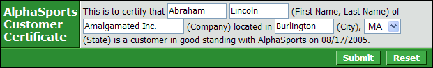
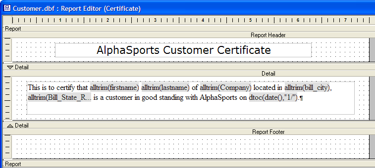
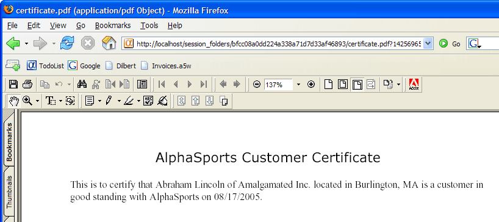

Printing a Dialog as PDF
 Note : The Printing a Dialog as PDF topic describes a technique available to Alpha Five database users.
Note : The Printing a Dialog as PDF topic describes a technique available to Alpha Five database users.
This example shows how to accept user input into a dialog component and then print a PDF version of the resulting document.
Creating the Dialog
Create a new dialog web component based on the AlphaSports database.
Display the Form > Controls page.
Add the "Firstname", "Lastname", "Company", and "Bill_City" fields to the dialog as textboxes.
Add the "Bill_State_Region" field to the dialog as a drop down listbox.
Select the "Bill_State_Region" control and click the
 in the DropDownBox Properties > Choices field to display the Define Choices dialog.
in the DropDownBox Properties > Choices field to display the Define Choices dialog.Select "Dynamic" in the Define Choices > List Type list.
Select "Variable" in the Data Source > Data source type list.
Enter "session.states" in the Data Source > Variable name field.
Click OK.
Set the Row Properties > Hide row selection to "True" for the "Firstname", "Lastname", "Bill_City", and "Bill_State_Region" controls.
Set the Textbox Properties > Size selection to 10 for the "Firstname" control, 10 for the "Lastname" control, and 15 for the "Bill_City" control.
Select the "Company" control.
Set the Row Properties > Freeform layout selection to "True" for the "Company".
Click the
in the Row Properties > Freeform template field to display the Freeform Column Layout dialog.Enter the following HTML code and click OK.
This is to certify that {Firstname} {Lastname} (First Name, Last Name) of {Company} (Company) located in {City} (City), {State} (State) is a customer in good standing with AlphaSports on {Today}. |
Change the Row Properties > Row label field to AlphaSports
Customer
Certificate.Change the Row Properties > Cell in line style field to vertical-align: top;.
Change the Row Properties > Row label in line style field to font-family: Verdana; font-size: 12pt;.
Display the Form > Properties page.
Click the
in the Server Events > Declarations field to display the Form Events dialog.Enter the following Xbasic code to create the session.states variable that populates the "bill_state_region" drop down list:
dim session.states as C |
Select the "Initialize" event from the Event list.
Enter the following Xbasic code to assign data to the session.states variable and set a default value for the "Today" control.
session.states = crlf()+ cstates("a" + crlf()) CurrentForm.Controls.Today = date() |
Select the "AfterValidate" event from the Event list.
Enter the following Xbasic script. This script saves the values in the dialog controls to the customer table. It then reads the customer_id value of this new record and uses that value to filter the LAYOUT.SAVEAS() function. This function uses the Certificate report of the customer table to create a PDF version of the dialog. This script runs when you click the Submit button.
dim tbl as P dim id as C tbl = table.open("PathAlias.ADB_Path\customer") tbl.enter_begin(.t.) tbl.company = company tbl.firstname = firstname tbl.lastname = lastname tbl.bill_city = city tbl.bill_state_region = state tbl.enter_end(.t.) tbl.fetch_last() id = tbl.customer_id tbl.close() Report.saveas("certificate@PathAlias.ADB_Path\customer.ddd", "pdf", "Customer_ID = " + s_quote(id), "", session.session_folder + "\certificate.pdf", .f.) response.redirect(session.session_url + "certificate.pdf?" + time("hms03")) |
Save the dialog as "AlphaSports_Customer". The dialog component should look something like the following.

Close the Dialog Builder.
Place the dialog component on a A5W page named "AlphaSports_Customer".
Creating the Certificate Report
Display the Reports tab of the Control Panel.
Click New, select "customer" in the Data Source list, select Start from a blank report, and click OK.
Draw a RTF object on the Detail section of the new report. Create content that looks like the following. For more information about working with RTF objects on reports, see Working with Rich Text Fields and Working with Conditional Rich Text Fields.

Save the new report as "Certificate".
After publishing the page, entering data, and clicking submit. You should see something like the following in Adobe Acrobat.

 Note : If you have a problem viewing the PDF file, make sure that you have installed Adobe Acrobat and have associated it with the PDF file type.
Note : If you have a problem viewing the PDF file, make sure that you have installed Adobe Acrobat and have associated it with the PDF file type.
See Also